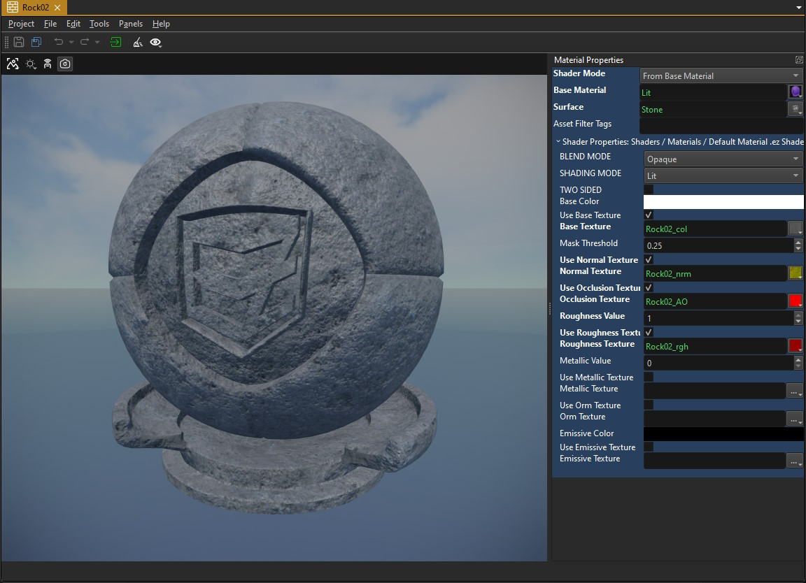

Materials
Materials are used to define the visual properties of rendered objects. Materials specify what shader to use to render an object and they allow you to configure that shader. Most commonly you select which textures to use. The most common use case for materials is through meshes. Each sub-mesh can have its own material.

The image above shows the material asset editor. Material assets are often automatically created when you import a mesh asset. For example importing an FBX or OBJ file will not only create a mesh asset, but can additionally create the necessary material and texture assets for you. Unfortunately, this process is not always perfect, so you should always review which assets were created and how.
Video: How to create a material

Physical Properties
Although materials are mainly used to configure the rendering, they can optionally reference a surface, which is used to define physical properties (e.g. friction) and gameplay relevant interactions. Whether the referenced surface is actually used depends on where the material is applied. For instance, on a greyboxing component the material sets up both the graphics and the physics properties, on a mesh component it only sets up the rendering and you would need to additionally select a surface for the corresponding collision mesh.
Selecting a Shader
Through the ShaderMode property there are three ways a material can select which shader to use:
From Base Material: This is the most convenient and most commonly used method. In this mode, you need to select a
BaseMaterial, which is just another material. All the properties of that base material are copied over to your material, including the shader selection. You can then override each property as you like. This makes it easy to set up a few common base materials and then "derive" all other materials from this common base.From File: In this mode the material actually references a proper shader file. This allows you to select a custom shader. By default, EZ doesn't have many different shader files, as all important variations are provided by the same shader file. However, if you do decide to write a custom one, this is the way to select it for your material. The engine parses the shader file for configurable properties and displays those as UI elements in the material editor. So things like which texture you can select and what other lighting properties the material will have, are all defined by the selected shader.
You can easily create a custom shader from a shader template.
Visual Shader: In this mode the material editor will show an additional editing area beneath the 3D view, where you can create your own shader through a visual graph system. This enables you to create custom shader effects like animated textures. There is a dedicated chapter about visual shaders (TODO) that explains how to do so.
If you change the selected shader, you need to transform (Ctrl+E) the material asset for the change to take full effect.
Shader Properties
The Shader Properties section lists all the properties that the selected shader exposes. The 3D viewport will live update for any change you make here.
DefaultMaterial Properties
The DefaultMaterial shader that comes with EZ implements a Physically Based Rendering model (PBR), which is the de facto industry standard these days. The details of PBR rendering are beyond the scope of this documentation, if you want to get an understanding of how roughness and metalness are used (see below), please search the internet.
The DefaultMaterial provides these options:
Blend Mode: Defines whether the object will appear opaque or transparent.
- Opaque: The object appears solid.
- Masked: In this mode the object can have fully transparent (invisible) areas and fully opaque ones. Blending is not possible. This is commonly used for vegetation or things like chain-link fences to cut out part of the object. Masked geometry does not require any sorting during rendering and is therefore the most efficient and reliable mode of transparency. Which areas appear transparent are defined by the alpha channel of the base texture and the
MaskThresholdproperty. Every pixel whose alpha value is above the threshold (e.g. white) will be visible (opaque) and every pixel whose value is below the threshold (e.g. black) will be invisible. - Transparent: In this mode geometry will appear see-through, ie. it will be blended with the geometry behind it. This mode is commonly used for things like glass or water. Again, the alpha channel of the base texture determines which areas appear more or less transparent.
- Additive: In this mode the geometry will not be blended with the background but simply added on top of it. The alpha channel affects how strongly it is added.
- Modulate: This mode allows you to darken or brighten the background. A pure white material (base texture and base color) will brighten everything that is behind the object. A pure black material will darken the background. A material that is mid grey will let the background through unmodified. This mode can be used for various special effects, especially when writing a visual shader (TODO) that animates the texture and the alpha channel with noise.
For testing transparent materials it may be useful to create an object in a scene and observe it there, where you can place it in front of different backgrounds.
Shading Mode: This mode allows you to select whether objects with this material should receive realistic lighting or should always appear fullly bright. The latter is useful for 2D sprites and UI elements.
Two Sided: If enabled, polygons with this material can be seen from both sides. This is useful for fences, vegetation and other masked geometry that is often represented only by a single polygon but can be looked at from both sides.
Base Color: The base color of the material. When no base texture is used, this is its only color, otherwise it is multiplied into the base texture color.
UseBaseTexture: If enabled, the Base Texture is used to color the object. This requires proper UV coordinates on the mesh.
MaskThreshold: Used for the Masked blend mode (see above).
UseNormalTexture: If enabled, the shader uses the Normal Texture to apply normal mapping.
UseOcclusionTexture: If enabled, an OcclusionTexture is used to affect lighting and to pronounce crevices. The effect of this can be very subtle.
Roughness Value: If no Roughness Texture is given, this value is used for lighting. If a roughness texture is available, this value is multiplied into the texture's value. The rougher a material is (value closer to one), the more diffuse the lighting will be (stone, cloth, etc). The smoother the material is (value closer to zero), the more pronounced specular highlights it will have (glass, ceramic).
UseRoughnessTexture: If enabled, the shader uses the Roughness Texture to determine how rough the surface is. The texture's value is multiplied with the Roughness Value so make sure to set that 1 to get the exact result.
Metallic Value: If no Metallic Texture is provided, this is the fallback value. Typically this should be 1 for metals and 0 for all other material types.
UseMetallicTexture: If enabled, a dedicated Metallic Texture is used to specify per pixel whether it is a metal or not. In physics, a material is either a metal or not, in computer graphics values in between are allowed and used to blend between the two results.
UseOrmTexture: If enabled, a dedicated Occlusion / Roughness / Metallic (ORM) Texture is used to specify these values per pixel. This takes precedence over the individual UseOcclusionTexture, UseRoughnessTexture and UseMetallicTexture options and if individual textures are also specified, they are not going to be used. ORM textures pack these three values into 3 channels (Red = Occlusion, Green = Roughness, Blue = Metallic) which is generally more efficient, though it means you can't have different resolutions for each texture.
EmissiveColor: An additional overall emissive color. If an Emissive Texture is activated, these two colors are multiplied, so you need to set this to white for the texture to have an effect. This is an HDR color, so you can scale up its intensity and thus pronounce the glow even further.
UseEmissiveTexture: If enabled, the Emissive Texture is used to define per pixel where the material will glow. This is multiplied with the EmissiveColor, so make sure that is not set to black (its default).
Material Preview
The 3D viewport of the material editor allows you to switch the render mode to inspect only specific aspects of the material.
Using the eye dropdown menu you can also select different meshes for previewing the material on.
Filtering Materials for Special Use Cases
Most materials will be applied to standard meshes and thus use shaders that work with them. However, some materials are meant for meshes that have non-standard data. For example the Kraut tree meshes are not compatible with the standard materials.
This means that materials authored for these trees should not be used on standard meshes, and vice versa. Thus when picking a material for a mesh (or a tree) the editor should only show the compatible materials for each situation.
To set this up, two things are necessary:
- The C++ code has to specify which materials are compatible for each resource slot. This is defined through the
ezAssetBrowserAttribute, using the tag argument (the second string). Setting this, for example, to"Kraut"makes the editor only show materials that have this tag. - In the material, use the
Asset Filter Tagsoption to configure what the material is compatible with. You can add multiple tags, separated by semicolon.
For standard materials none of this is necessary, and for non-standard materials it is only a usability improvement.